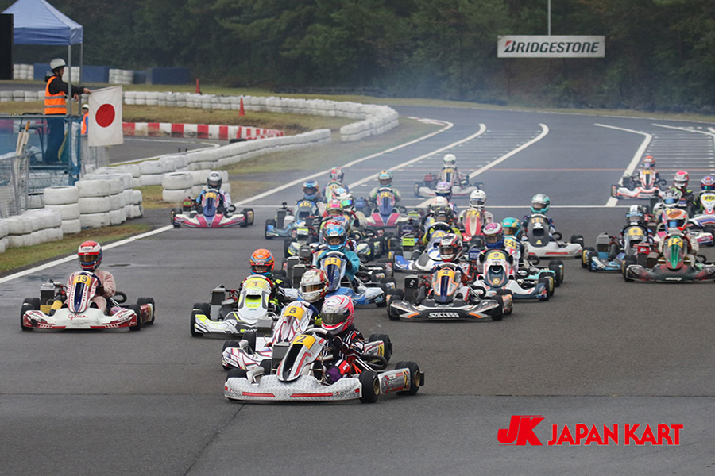
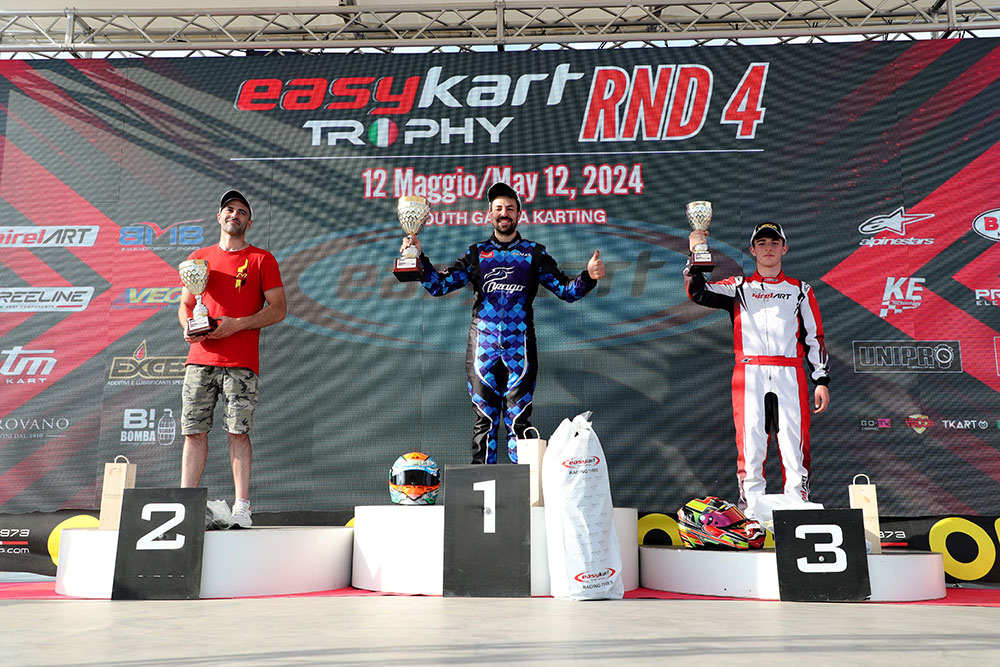
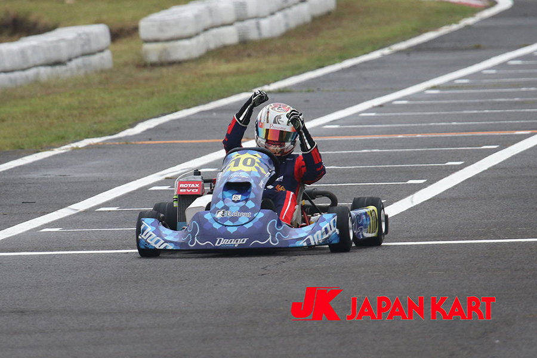
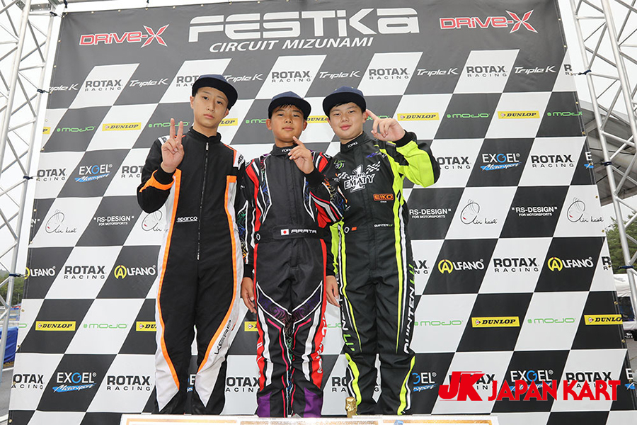

Первый старт
Первый старт
Детям и юным пилотам
SODI LR6
7–13 лет · рост от 130 см
- Комплектация
- Honda GX160
- Трасса
- Крытая · заезды 7–13 лет
Регулируемые сиденье, руль и педали
900 ₽ / 10 минут

Картинг-центр · Москва
Первый заезд или новый личный рекорд.
Выбери свой карт и выходи на старт.
02 / НАЙДИ СВОЙ ТЕМП
Первый старт
Детям и юным пилотам
7–13 лет · рост от 130 см
Регулируемые сиденье, руль и педали
900 ₽ / 10 минут
 Начни здесь
Начни здесь
Взрослым и новичкам
от 14 лет · рост от 145 см
EASY DRIVE и регулируемые педали
1 200 ₽ / 10 минут
 Следующий уровень
Следующий уровень
Пилотам с опытом
от 16 лет · рост от 150 см
Спортивное шасси и регулируемые педали
1 600 ₽ / 10 минут
03 / КАЖДЫЙ ПОВОРОТ — НОВЫЙ
В любую погоду
 Летний сезон
Летний сезон
04 / ВПЕРВЫЕ ЗА РУЛЁМ?
Опыт не обязателен. Поможем с посадкой, объясним сигналы и подготовим к первому кругу.
Сравни модели, длительность и стоимость. Укажи пожелания в заявке.
Заложи 20 минут на регистрацию, подбор экипировки и инструктаж.
Следуй указаниям инструктора. Скорость придёт вместе с уверенностью.
КОМАНДЕ ТОЖЕ НУЖЕН ПИТ-СТОП
День рождения, встреча друзей или корпоративный заезд.
Расскажи о своей компании — обсудим формат.









Еженедельная программа на крытой трассе. Выбери формат, чтобы запросить ближайшую дату.
Первый круг ехала осторожно. После инструктажа уже знала, где сбросить газ перед шпилькой.
Приехали втроём, выбрали одну модель и сравнили время круга. Теперь есть повод для реванша.
Сын впервые сел за руль. Понравилось, что у детей своя сессия и взрослые не торопят на поворотах.
После первого круга инструктор показал, где я слишком рано торможу. Вторую попытку проехала ровнее.
Взяли одну модель на всю компанию. Самое интересное началось после финиша, когда сравнили круги.
До выезда дочке показали педали и сигналы. С трибуны было видно почти весь её круг.
Подходящих вопросов нет.
За 20 минут до старта, чтобы подобрать экипировку и пройти инструктаж.
Закрытую обувь и удобную одежду. Длинные волосы собери перед заездом.
Для первого взрослого заезда подойдёт RT10. Детская модель — LR6.
В кабинете пилота открой «Результаты заездов». В примере доступны времена пяти кругов.
Для LR6 — от 7 лет при росте от 130 см.
Ребёнок должен приехать со взрослым. Взрослый остаётся в центре до конца заезда. На крытой трассе дети 7–13 лет ездят самостоятельно в отдельной сессии.
Можно выбрать 10, 15 или 20 минут.
В заявке укажи модель, длительность и число пилотов. Итог обновится сразу.
С июня по август в сухую погоду.
Крытая трасса — 420 м, открытая — 680 м.
Войди в кабинет до оформления, затем открой «Мои заезды» на том же устройстве.
Да. Для детей 7–13 лет проводятся отдельные заезды на крытой трассе. С 14 лет можно участвовать в общих заездах при росте от 145 см и допуске инструктора. После инструктажа ребёнок самостоятельно управляет одноместным картом. Совместного заезда в одном карте с инструктором у нас нет. Условия по моделям:
Название модели открывает её карточку в каталоге. Окончательный допуск определяет инструктор после проверки посадки. Сопровождающий взрослый остаётся в центре, а не едет в карте вместе с ребёнком.